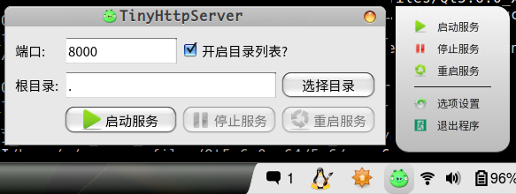

一个简单的跨平台Http服务器．服务器部分使用了Mongoose的代码，界面是使用ＱＴ开发的． 开发为了在临时需要使用一个http服务器来做发布代码文档的时候，不用去安装apache等大块头．又因为网上的一些迷你型的webserver又多是只支持windowns的．所以干脆自己做一个．
本来向自己写一个http Server的，看了tinyhttp的代码，决定功能太弱了．又发现了Mongoose这个东西，看起来还不错，也简单好用，就拿过来先用了．
在实现的时候没有考虑多进程实例的情况，这个毕竟只是一个小玩具．
